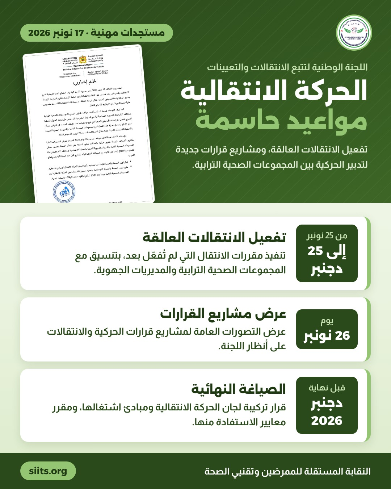

الحركة الانتقالية: تفعيل مقررات الانتقال العالقة بين 25 نونبر و25 دجنبر، وعرض مشاريع القرارات الجديدة يوم 26 نونبر

انعقد يوم الثلاثاء 17 نونبر 2026، بمقر مديرية الموارد البشرية بوزارة الصحة والحماية الاجتماعية، اجتماع اللجنة الوطنية لتتبع الانتقالات والتعيينات، خُصص لمناقشة المبادئ العامة المؤطرة لمشاريع القرارات المرتبطة بتدبير حركية وانتقالات مهنيي الصحة خلال المرحلة المقبلة، لا سيما تلك المتعلقة بالمكتسبات المنصوص عليها ضمن الدورية رقم 31 بتاريخ 08 ماي 2014.
وتدارس الاجتماع آليات مواكبة التنزيل الفعلي للمجموعات الصحية الترابية والإكراهات التدبيرية المصاحبة لها، مع التركيز على إيجاد حلول عملية لتسريع تفعيل مقررات انتقال مهنيي الصحة التي لم تُنفذ بعد. وتم التوافق على أن تقوم الإدارة بتنسيق أجرأة هذه العملية مع المجموعات الصحية الترابية والمديريات الجهوية للصحة والحماية الاجتماعية المعنية، خلال الفترة الممتدة ما بين 25 نونبر و25 دجنبر 2026.
وفي ختام اللقاء، تم الاتفاق على: • تحديد يوم 26 نونبر 2026 موعداً لعرض التصورات العامة لمشاريع القرارات المرتبطة بتدبير الحركية والانتقالات على أنظار اللجنة، بحضور ممثلي المجموعات الصحية الترابية والمديريات الجهوية ومختلف المتدخلين. • الانتهاء من الصياغة النهائية لهذه المشاريع قبل متم السنة الجارية، ويتعلق الأمر بقرار لوزير الصحة والحماية الاجتماعية بتحديد تركيبة لجان الحركة الانتقالية ومبادئ اشتغالها، ومقرر بتحديد معايير الاستفادة من الحركة الانتقالية بين المجموعات الصحية الترابية، وبينها وبين الإدارة المركزية والمؤسسات والوكالات والهيئات المعنية.
فتح في تطبيق النقابة